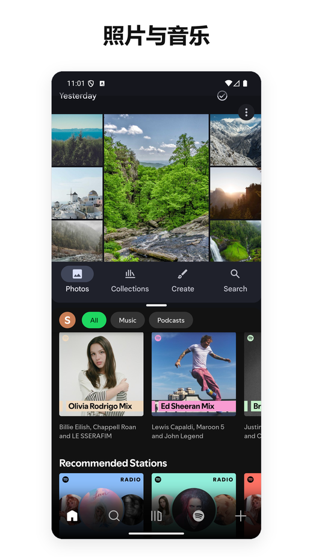
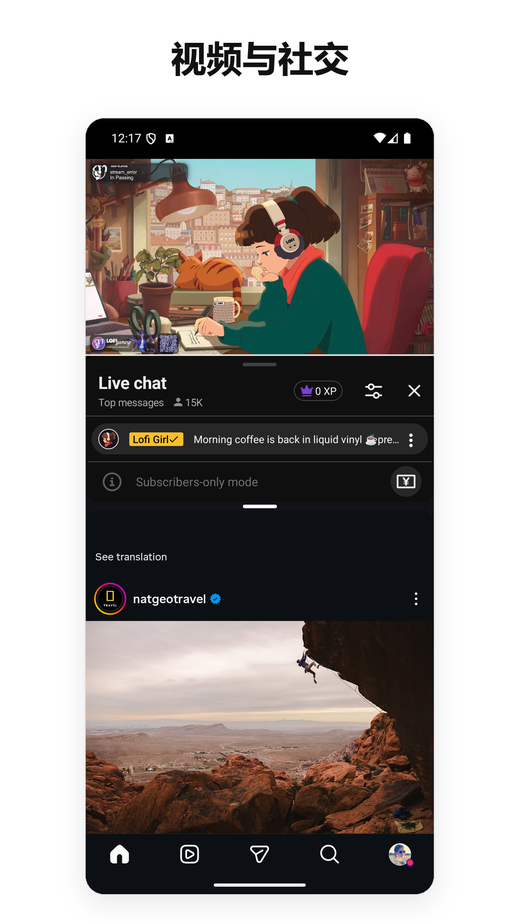
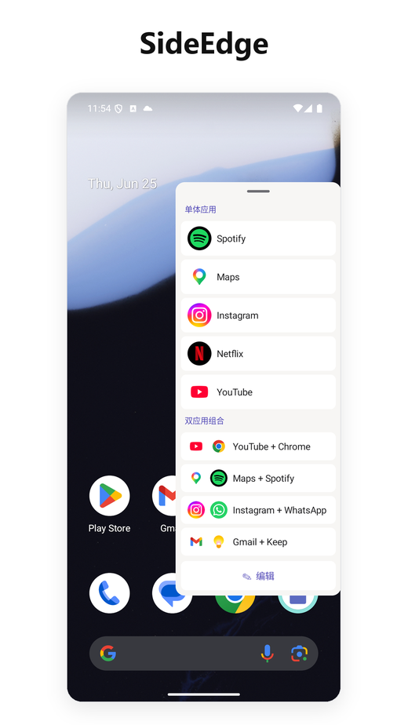
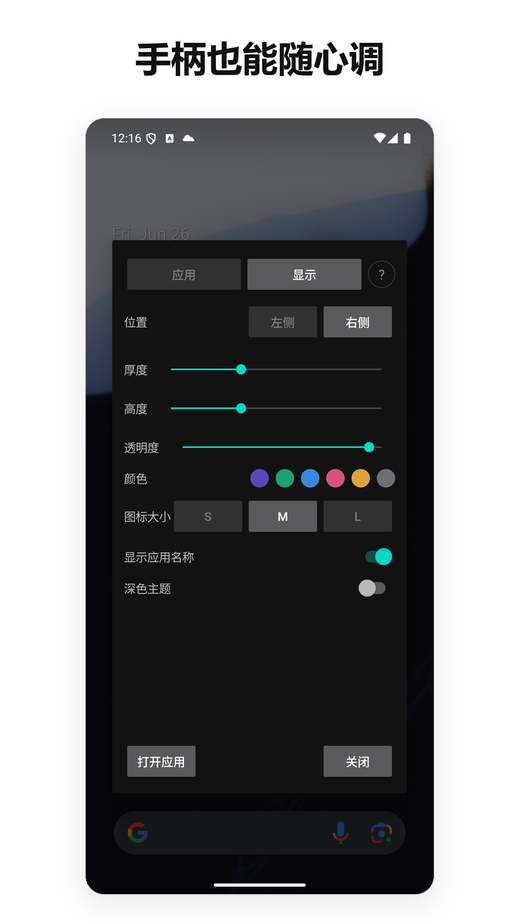

- 少数仍能在 Android 15、16 和 17 上稳定运行的分屏工具之一。
- 大多数竞品在 Google 修改底层 API 时停摆；我们在近年每一次 OS 过渡中都持续发布更新。
- 无广告、无需联网。分屏核心在 Android 12L+ 上无需无障碍服务；可选的 SideEdge 侧边栏才会用到它，仅用于在登录/密码界面隐藏它的把手。轻量，没有后台服务。
- 免费版已覆盖核心用法。Pro 订阅约为每月 $1，仅为最接近付费竞品价格的约十分之一。
- 手机端的原生"应用对"基本上是三星独占——Android 15 虽然在系统层面加入了这个功能，但仅限大屏设备，Pixel 手机（以及其他所有非三星手机）都被排除在外。
- 如果你在使用 Pixel，又怀念 Galaxy 的"应用对"，这是我们见过最接近的替代方案。
1. 背景：为什么 Android 上的"应用对"很重要
Android 自 7.0（Nougat，2016 年）起就支持分屏多任务。但它从未在 OS 层面支持过 保存两款应用的组合并同时启动。三星在 2017 年就以"应用对"的形式在 One UI 中加入了这个功能；从 Galaxy 切到 Pixel 的用户几乎立刻就会注意到它消失了。
变通办法是安装一个第三方启动器，把"打开应用 A、再把应用 B 放到相邻窗口"这两步自动化。Google Play 上有几十款这类应用——但这个生态比看起来更混乱，因为每一次 Android 发布都会改动分屏调用方式，而大多数应用都没有跟进更新。
Android 15（2024 年）终于在系统层面加入了原生的"应用对"功能——但 Google 把它的适用范围限定在 大屏设备 上。Pixel Tablet 用上了，Pixel 9 Pro 却没有。截至 2026 年年中，手机端的格局大致是这样：
- 三星 Galaxy 手机——自 2017 年起原生支持"应用对"（通过 Edge 面板）
- Pixel 手机（标准机型，不含 Tablet 和 Fold）——没有
- 小米、一加、OPPO、realme、vivo、摩托罗拉、诺基亚、索尼、华硕——没有
所以在手机上，原生"应用对"基本上就是三星独有的功能。其他厂商的用户要么用 Android 自带的手动分屏（打开应用、长按最近任务、拖动、再来一遍），要么就装一款像本文这样的第三方启动器。
面向 Pixel 和原生 Android 的三星应用对替代方案
如果你从 Galaxy 手机换到了 Pixel —— 或换到任何一款原生 Android 手机 —— 正在寻找一款三星应用对的替代方案，那么 Split Screen Launcher 正是为填补这一空缺而打造的。你能获得同样的一键"并排启动两款应用"体验，无需三星设备，也不用 Edge 面板。
它还是少数仍能在 Android 15、16 和 17 上运行的分屏应用之一 —— 无广告、无追踪 SDK，分屏核心在 Android 12L 及以上也无需无障碍权限（可选的 SideEdge 侧边栏是唯一的例外）。大多数较旧的应用对工具依赖近期 Android 版本已经关闭的系统快捷方式；而这一款通过一条我们在每次系统更新中都保持可用的路径进入分屏。
2. Split Screen Launcher 究竟能做什么
Split Screen Launcher 是一款单一用途的工具。你选两款应用，给这对组合起个名字（如"通勤""工作""YouTube + Instagram"），它就会作为一行出现在应用里。点击这一行，两款应用就会并排打开。


功能真的就这些。没有内置浏览器，没有悬浮小部件，没有通知面板集成。应用很轻量 —— 只有几兆字节 —— 也不会在后台运行任何东西。
测试期间我们使用的应用对示例：
- Google 地图 + Spotify —— 开车时
- YouTube + Instagram —— 第二屏观看
- Chrome + Google Keep —— 边查资料边记笔记
- Gmail + Slack —— 工作分流
- 计算器 + Chrome —— 跨标签页比价
有一个我们没料到的使用场景：车里。一位用户告诉我们，他在车载的 Android AI 盒子上运行 Split Screen Launcher，导航配音乐时用 Maps + Spotify，给副驾座上的人则切换到 Maps + Netflix。由于启动一个应用对只需轻点一下，它比在最近任务菜单里长按操作更适合车机。
另一个完全没料到的使用场景来自截然不同的角落：摩托车。一位把平板固定在车把上使用本应用的骑手，希望 MacroDroid 自动化能自行唤起一个已保存的应用对——一个由点火触发的宏，在行驶时无需任何点击就能打开分屏。这个需求直接变成了一个功能。从 3.0.4 版本起，MacroDroid 可以通过 Android 标准的快捷方式选择器来启动已保存的应用对，宏就能像触发其他动作一样触发分屏。Tasker 或 Automate 这类自动化工具我们没有逐一测试，但由于该功能依赖的是标准的 Android 选择器而非任何应用专属机制，它们应该同样适用。这是一项 Pro 功能，严格限于启动你预先保存好的应用对。不用自动化工具的用户对此不会有感知——但对于骑行途中需要免提操作的那部分用户来说，它填补了"一键"和"零点击"之间的空缺。
感兴趣的话，以下是 MacroDroid 中的设置步骤：
- 在你的宏中，添加一个 Action → Applications → Launch Shortcut。
- 在"Select Shortcut"列表中，选择 Split Screen。
- 选择你想触发的已保存应用对。
- 绑定到你喜欢的任意触发器——Bluetooth 设备连接、充电器插入，或某个时间点。
就这样。宏触发时，你的应用对就会以分屏方式免提打开。（上面那位骑手把它绑定到摩托车点火；你也完全可以改成汽车 Bluetooth 连接。）
有个细节容易被忽略，但值得单独提一下：应用对数据可以导出为备份文件。听上去不起眼，但同品类的几款竞品把应用对存在应用私有目录里，没有任何导出途径——换手机就意味着手动重建所有应用对。我们一开始就把备份/恢复做成一流功能，正是为了让 Pixel 到 Pixel 的迁移能在几秒内恢复整套配置。
另一个需要提前说明的设计取舍：默认情况下，应用对都存在于应用内部 —— 不会创建桌面图标。原因一半是为了简洁（桌面不会被应用对图标堆满），一半是出于架构考虑 —— 应用不会被特定启动器（Pixel、Nova 等）所绑定。正如第 3 节所述，基于快捷方式的启动器正是 Android 15 和 16 过渡时最容易失效的那一类；把操作留在应用内部，可以让换机迁移更顺滑。
一个可选的"固定到桌面"功能让 Pro 用户可以直接从桌面图标一键启动应用对。我们希望保留原本"桌面保持简洁"的姿态，同时也回应"想直接从桌面图标启动分屏"的需求。桌面上显示的图标把两款应用图标上下堆叠，使应用对在视觉上和普通启动器图标区分开。
SideEdge — 从任意界面启动你的应用对
3.0 版本新增了 SideEdge：一个从屏幕边缘滑出的侧边栏。它会列出你保存的应用对和单个应用，让你可以从任意界面发起分屏 —— 或直接跳转到某一款应用 —— 无需先回到桌面。
如果你是从 Galaxy 手机换过来的，这部分会让你感到熟悉。Samsung 的 Edge Panel 正是很多人在 One UI 上启动应用对的方式 —— 屏幕侧边的一个标签，滑出后是一排快捷方式。SideEdge 是我们对这个思路的演绎，把它带到了任意 Android 手机或平板上。它并不能完全替代 Samsung 的版本，但能带来相近的体验 —— 而且和应用其余部分一样，它没有广告。如果你一直在 Pixel 或原生 Android 上寻找 Edge Panel 的替代方案，这是我们见过最接近的选项之一。


悬浮把手如果停在登录或密码界面上方，会挡住你的输入。所以 SideEdge 的无障碍服务只用于一个非常特定的单一目的 —— 识别这些安全界面，把把手挪开，让你能正常输入，输入完成后再把它移回来。它绝不会读取、收集或传输屏幕内容。完整细节见下文的权限与隐私。
哪些用户适合（哪些应略过）
在进入技术细节之前，先做一个快速的适配检查，帮你判断是否值得继续往下读。
适合你，如果你……
- 经常把同两款应用一起用（地图+音乐、邮件+聊天）
- 用 Pixel 或原生 Android，怀念三星的应用对
- 偏好无广告、无追踪 SDK 的应用
- 正在用 Android 12L 或更新版本（分屏核心无需无障碍权限，仅 SideEdge 会用到）
- 想要一款能跨系统版本持续可用的工具
略过这款，如果你……
- 基本上不怎么用分屏
- 想要悬浮小部件、手势启动，或（超出启动已保存应用对范围的）高级自动化功能
- 使用三星设备 —— One UI 自带的应用对已经非常好
- 使用深度定制的安卓系统（MIUI/HyperOS、OxygenOS、ColorOS、MagicOS、EMUI/HarmonyOS）—— 这些厂商改动了分屏的底层实现，所以在这些系统上我们只能尽力支持，无法完全保证表现
还感兴趣？ 后面的内容是技术背景 —— 为什么 Android 15 和 16 让大多数替代品失效，以及我们方法背后的设计决策。
3. Android 15/16 难题 — 以及大多数竞品为何停摆
这是最有意思的部分，也是大多数同类应用不再可用的原因。
历史上，分屏启动器一直依赖少数几个 OS 级别 API，而 Google 已经在逐步收紧或移除它们。每一次 Android 新版本都在削弱第三方应用用来并排启动两款应用的手段。Android 15 和 16 尤其关闭了最常用的路径。shell 层面的变通方法也以类似方式失败。
说人话：第三方应用过去用来把手机切到分屏的"小窍门"，在 Android 15 和 16 上已经不起作用了。这个品类里的大多数应用都没发布修复版。
Split Screen Launcher 通过另一条路径，在 Android 15、16 以及全新的 Android 17 上依然能稳定进入分屏。具体机制我们不公开——找到一套跨系统版本可用的组合，花了相当多的实验，而把方法公开等于把它交给每一个已停摆的竞品。能说的是：我们的发布历史显示，在 Android 12、12L、14、15、16 和 17 每一次过渡中都有活跃的维护，并且我们打算继续保持这个节奏。
android:resizeableActivity="false" —— 原生相机和 Google Files 就是典型代表 —— 直接启动它们不会形成分屏对，而是只把这一个应用单独以全屏方式打开（三星自带的应用对也是同样的行为）。
（变通方案）同时打开
设置 → 系统 → 开发者选项 → 强制将活动设为可调整大小 和 允许将不可调整大小的应用置于多窗口，这些应用就也能在分屏中工作了。应用内帮助页（"如何使用'可能无法工作'的应用"）有详细步骤。
（更新）近期版本还处理了几款过去难以配对的应用——其中包括 Alexa 和 Google Calendar——它们现在都能正确地在分屏中打开。
4. 权限与隐私
在 Android 12L 及以上，启动一个应用对无需任何运行时权限，也无需无障碍服务 —— 核心分屏流程使用标准的 Activity 标记完成。唯一会用到无障碍服务的功能是 SideEdge：如果你开启侧边栏，该服务只用于一个很窄的用途 —— 识别登录和密码界面，把悬浮把手挪到一边，使它绝不会遮住安全提示，待你完成后再把它移回来。它绝不会读取、收集或传输屏幕内容。
唯一可选的例外是 按应用对自动旋转。如果你为某个应用对开启该功能，应用会在那一刻通过系统设置对话框请求 WRITE_SETTINGS 特殊权限 —— 它绝不会提前索取，除非你使用该功能，否则你根本不会看到它。
在 Android 9 到 12，应用确实需要无障碍服务权限，因为那是唯一可用的 API。Play Store 商品页明确说明该服务仅用于触发分屏模式。Google Play 显示的权限列表足够短，一屏就能看完——没有位置、没有通讯录、没有存储，而且（特别是）没有网络。在同类应用中，这已经非常罕见了。
说人话：在较旧的 Android 上没有官方 API 可以触发分屏，无障碍服务是当时唯一可行的路径。这是一项遗留约束，而非应用用它来读取你屏幕的借口。
对比之下，Play Store 上大多数免费分屏应用都捆绑了广告 SDK（AdMob、Unity、IronSource），这意味着它们会附带 INTERNET 权限和随之而来的追踪器包。我们选择用最小的订阅来盈利——一方面是为了保持极简的权限要求，另一方面是因为把广告 SDK 塞进一个这么小的工具会让它的体积大幅膨胀。
5. 与其他分屏应用的对比
在给出对比之前，先勾勒一下整体格局。"应用对"式功能有几种实现路径：
- 厂商专属实现 —— 三星的应用对（2017 年 One UI 以来），以及小米、OPPO 和旧 LG 的变体。只在各自厂商的设备上可用。
- 第三方工具 —— 专注这一用例的独立应用。大多数建立在近年 Android 中被收窄或移除的 OS 级 API 之上，因此可用的产品已明显减少。
- 基于自动化的方案 —— Tasker 等工具可以脚本化分屏启动，但它们依赖与专用应用相同的底层原语，会继承同样的失效问题。而且每个应用对都要用户手工搭建。从 3.0.4 版本起，我们提供了一种直接接入这类工具的方式：无需自己编写分屏脚本，即可通过 MacroDroid 启动已保存的应用对（Pro 功能）。由于它使用的是 Android 标准的快捷方式选择器，Tasker 或 Automate 等其他自动化应用理论上也同样适用，但我们尚未对这些工具进行端到端测试。
第三方阵营自身也参差不齐。Google Play 上能找到几十款专做分屏的工具，但活跃度和质量的分布极不均衡。
该品类中下载量最高的几款应用累积了数百万的安装量，但这个领域的领头羊表现得出人意料地平庸：其中最大的那款覆盖面虽广，评分却平平；另一款装机量同样可观的替代品，最后一次更新停留在 2025 年年中，至今没有针对 Android 15 / 16 分屏 API 变更发布任何修复。还有几款的定价相当激进，高昂的按周订阅在用户社区中招致不少批评。
整个领域的共同模式大致是：大多数应用要么在 Android 11–12 前后就停止更新，要么塞进了打扰式的横幅或插屏广告，要么在所有 Android 版本上都要求无障碍服务权限（本应用的分屏核心在 Android 12L+ 上去掉了这项要求，仅可选的 SideEdge 侧边栏会用到它）。这使得"持续维护、权限克制"的选项在这个领域出乎意料地稀少。
像这款这样小而持续维护、没有广告的应用，本来很有机会从中脱颖而出——前提是用户能找到它。
6. 价格
免费版会限制可保存的应用对数量，让用户在决定是否合用之前就能体验完整流程。核心功能——创建应用对、启动、备份/恢复——全部免费。
Pro 订阅约为 每月 $1，价格因地区略有差异，订阅后解除应用对数量限制，并新增文件夹分组和图标颜色自定义。普通的 Google Play 订阅，随时可取消。
作为对比：同品类的其他付费分屏工具，其高级版定价从一次性几美元到高昂的按周订阅不等。$1/月大约比最接近的付费竞品价格便宜一个数量级。
7. 总结 — 它为谁而作
这款应用适合谁？ 坦率评价
我们不认为这款应用适合所有人。如果你没有固定的双应用习惯（地图+音乐、邮件+聊天等），你可能不会经常打开它。但如果你用的是原生 Android，而且在从 Galaxy 换到 Pixel 之后一直怀念应用对功能，我们就是为你打造这款应用的——并努力让它成为恢复这一体验最完整的方式。无广告的姿态和 $1/月 的定价都是有意选择，我们认为这些在该品类中是正确的。
优点
- 在 Android 15、16 和 17 上真的能用
- 任何套餐都没有广告
- 轻量，没有后台服务
- 分屏核心在 Android 12L+ 上无需无障碍权限（仅可选的 SideEdge 会用到）
- 完全没有声明网络权限
- Pro 版约 $1/月，是竞品的十分之一
- 支持备份 / 恢复，便于设备迁移
- 可选的按应用对屏幕旋转（例如强制让视频应用对横屏）
- 支持 15 种语言本地化
缺点
- 从点击到分屏出现之间大约有 1 秒的可感知延迟。这主要是 OS 端的开销——Android 12L+ 进入分屏模式涉及系统内部多次任务切换，所以这个品类的任何应用都会落在 0.8–1.2 秒的区间。不是 bug，但值得提前告知
- 没有悬浮小部件，没有手势绑定。自动化应用启动（MacroDroid）已支持，但为 Pro 功能，且仅限触发已保存的应用对。桌面快捷方式同样作为可选项（Pro），其他功能依然全部留在应用内
- 应用对创建列表会无分类地显示所有已安装应用，设备上超过约 60 款应用后会略显繁琐
- 独立开发者，所以如果你在非 Pixel 的 ROM 上遇到边缘场景，不要指望当天修复